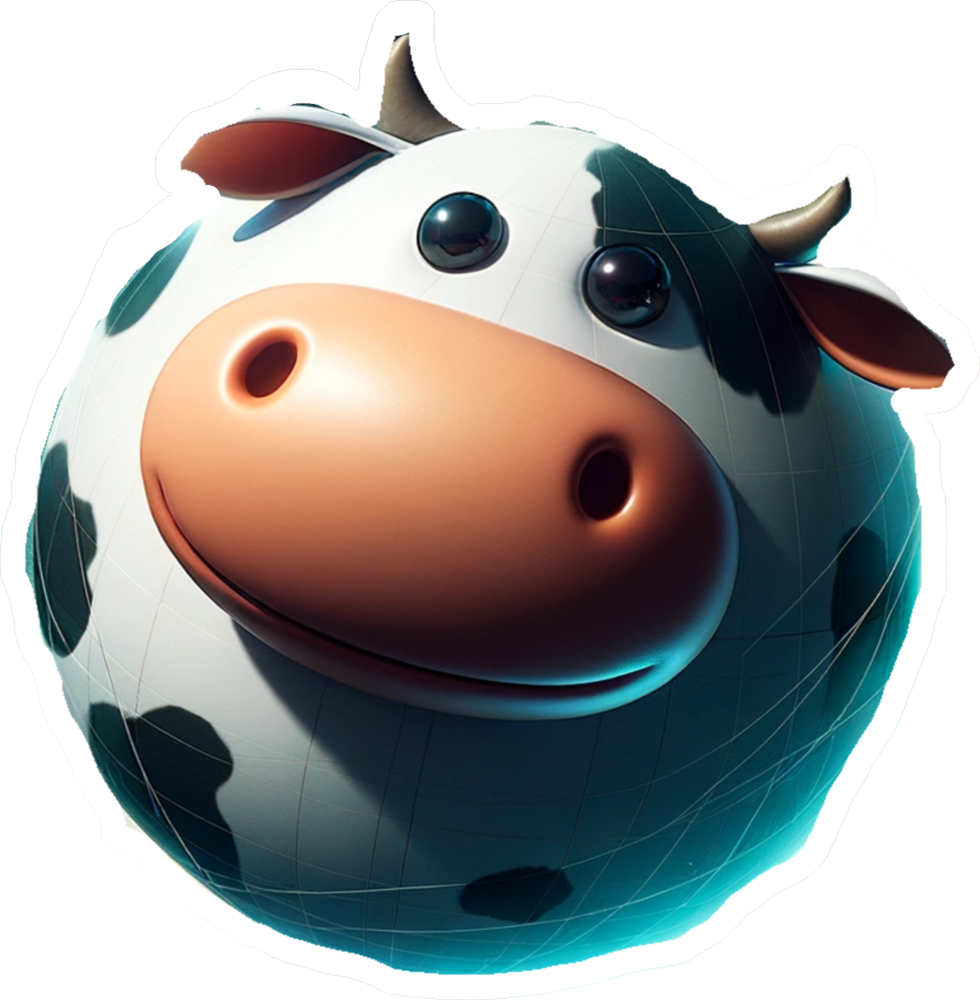
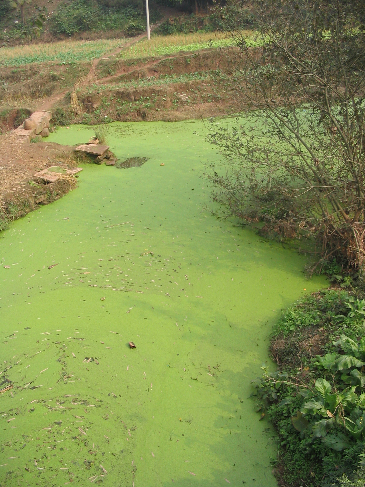
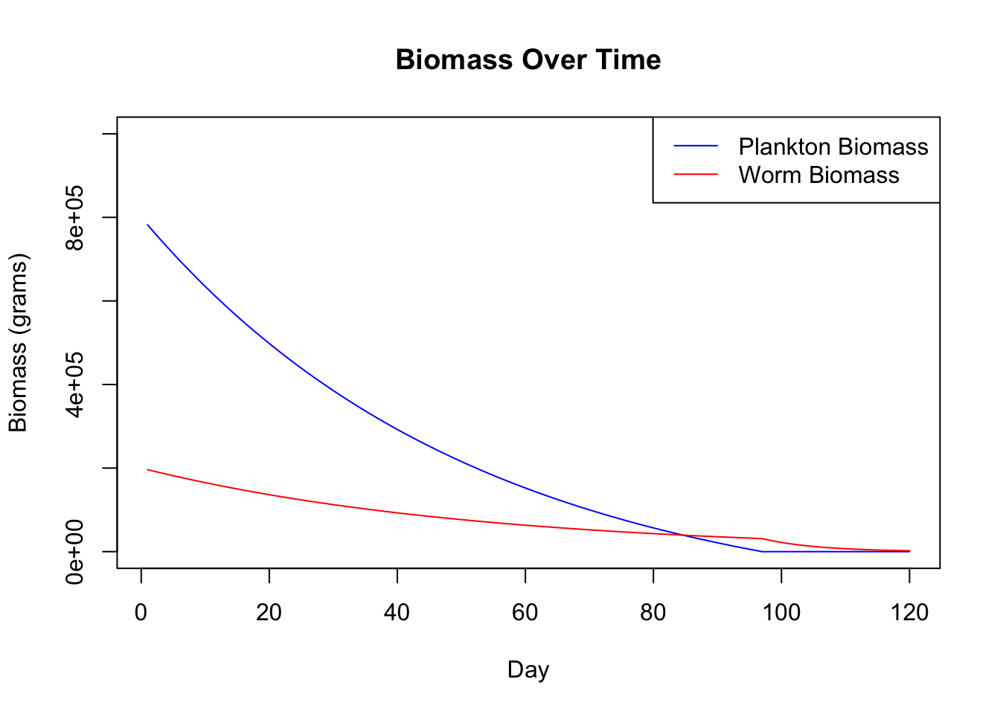

I, like many others, saw Dune 2 recently. And beyond the secret cults, prophetic visions, and Christopher Walken led space empire I got to wondering how the most iconic creatures in the world of dune actually manage to exist on such a barren planet.
For those who have not seen any of the Dune movies past or present here’s a little background. The Dune universe, is set in a distant future where interstellar societies vie for control over planets and resources. Central to the series is the desert planet Arrakis, also known as Dune. It is the only source of melange, or “the spice,” a substance that enhances mental abilities, extends life, and enables space navigation. The ecology of Arrakis is harsh and unforgiving, characterized by vast deserts, scarce water, and extreme temperatures.
A unique aspect of Arrakis is its ecosystem, evolved to thrive under these extreme conditions. The most iconic inhabitants are the giant sandworms, or Shai-Hulud, which play a critical role in the spice cycle. The sandworms are colossal creatures, worshiped by the native Fremen as sacred beings. The planet’s ecology revolves around the life cycle of these sandworms, with various species, including the sand plankton and little makers, contributing to the production of spice.
When I was watching both Dune movies I noticed that the planet of Arrakis is totally barren, no megafauna besides the sandworms exist (besides apparently some large centipedes) and it appears that the sandworms despite being gargantuan would be unable to sustain themselves eating native fauna. I also thought about how many humans a sandworm would have to eat and given that the number of calories in a 145 lb human body is about 125,8221, it seems that humans are probably not a sustainable food source for the sand worms. So I got digging in order to find out how Sandworms may be able to sustain themselves on Arrakis.
Sandworm Anatomy and Basal Caloric Needs
I haven’t read the books so I’m only able to go off of what I found on Wikipedia or the Dune wiki which quotes the books. For example we get the following information about sandworms length and diameter:
“Sandworms grow to hundreds of meters in length, with specimens observed over 400 metres (1,300 ft) long[12][13] and 40 metres (130 ft) in diameter, although Paul becomes a sandrider by summoning a worm that”appeared to be” around half a league (1.5 miles (2.4 km)) or more in length”
Even though it appears that most specimens would be below the quoted 400 meters long and 40 meters in diameter (as those dimensions are specifically called out they are likely not the average) we will take this as our estimate for the average given the absence of additional information.
An additional piece of information from the wiki is as follows:
“Herbert notes in Dune that microscopic creatures called sand plankton feed upon traces of melange scattered by sandworms on the Arrakeen sands.[16] The sand plankton are food for the giant sandworms, but also grow and burrow to become what the Fremen call Little Makers,”the half-plant-half-animal deep-sand vector of the Arrakis sandworm”.[17]“
Calculations:

Cows, according to physicists
So lets assume that the sand worm is a perfect cylinder for our model.
The equation for the volume of a cylinder is
\(V = \pi r^{2} h\)
Given previous observations:
\(V = \pi * 400*400\)\(V \approx 500000\)
Now we can use the Kleiber Formula to estimate the basal caloric requirements of a sand worm, note this does not include the calorie expenditure from locomotion or other energy expenditures.
If we take a 176lbs or 80kg and 6’ tall human then the basal metabolic rate for this person is around 1800 Calories per day.2
Muscle, skeletal weighs 1.04 gram per cubic centimeter or 1040 kilograms per cubic meter3
Lets assume a sandworm is made up of dense muscle fibers, perhaps its made up of denser stuff but being a biological organism it makes more sense to assume it’s closer to human than not and considering a cubic meter of steel weighs around 7900 kg then we will only be off by a factor of 7. Being off the answer by a factor of 7 is not going to be such a make or break considering the magnitudes already involved in our calculations, and it is unlikely that a biological organism would be so dense as steel, so we’ll just use skeletal muscle here.
On a 2000 Calorie per day diet recommended for an average person, each sand worm of this size would eat the same number of calories as a town of 3,099,167 people. Just 1 sandworm eats more calories than Chicago does each day. It’s a lot of food!
Now the next problem we should consider is how much material does a sandworm need to sift through in order to meet its caloric needs? What sort of calories do the sand plankton produce and in what densities are they found that could reasonably approximate the needs of the sandworms?
Sandworms as filter feeders
One source that I found for the plankton biomass in a highly eutrophic lake comes from the following source which finds wet weight of phytoplankton per cubic meter of water. Highly eutrophic means that the oxygen in the body of water has declined to the point that animals begin to die off. This highly eutrophic environment is perfect for algal blooms:

I don’t recall seeing this in the movie
So given that highly eutrophic environments are the perfect breeding ground for phytoplankton we can take our highest estimate for plankton living on Dune from these types of lakes. The wet weight of the phytoplankton found from the lake in question was 680 grams per cubic meter of water, the caloric information for phytoplankton I found is expressed in terms of dry weight so using a deflation factor of 5 source this we can convert wet weight to dry weight and get the calories per cubic meter of water.
So if a Sandworm acted as a baleen whale and was able to convert 100% of the calories in the plankton on Arrakis it would have to process roughly 11,400,000 cubic meters of water per day which turns out to be around 4500 olympic swimming pools of water. Consider
But Sandworms don’t live in the water. And do they even filter feed? The mouth doesn’t look arranged such that they can filter out water in the same way that a whale does – which occurs by forcing water out of the corners of the mouth – based on the movie the Sandworms appear to eat the sand itself without much care? In any case, phytoplankton can exist in the densities they do in bodies of water due to light penetrating the water, otherwise if they were on land they must live on the surface only in order to convert sunlight into usable energy.
Further calculation could illuminate this, lets assume that phytoplankton are only on the surface of the sand or just under it as winds reshape the dunes on top of them. We could expect, perhaps unreasonably, that this phytoplankton is 5mm thick over the surface of Arrakis. If this is the case then in order to get the same number of calories the sandworms must traverse an area 200x larger than before. As we read before, the sandworms have a diameter of 40m given images from the movie and using a tool to count pixels I found that the edges of the mouth are around 110 pixels wide on each side and the mouth itself is about 725 pixels wide. So taking this ratio of 220:725 we can find the diameter of the worms mouth and then the area itself to get an understanding of how many cubic meters could enter the worm’s mouth at once.
So as the worm travels along if it keeps its mouth fully open to filter the sand then for each meter it moves along it can fully consume 615 cubic meters of sand. If we were in the highly eutrophic water scenario then it would only take about 18526 meters of travel for the sandworm to sate its basal metabolic needs. Given the previous assumption about 5mm thickness of phytoplankton on the surface then the worm must travel 3700 km per day to get this need met. It’s clear why the worms would be so sensitive to rhythmic motions then, as humans or other biomass with higher calorie counts would be much more appealing sources of calories than long distance travel especially since we haven’t even factored in the calorie requirements of travelling at high speeds with such massive bodies.
Further Limits to Plausibility
This type of diet doesn’t seem very sustainable
And this is by assuming that the energy that the sandplankton is coming from the sun rather than the spice melange as written in the books. Given that the sandplankton feed on spice melange which is a byproduct of the worms themselves and the worms are a later stage of the sandplankton then the energy in the system must be decreasing over time unless there is some outside source of energy.
The offerings of bodies to Shai Hulud at various moments in both Dune 1 and 2 are insufficient to correct this issue unless humans or other animals are brought to Arrakis to be offered en masse (a standard worm would require >1300 humans each day).
All of this to say, in my own meandering way, that if Frank Herbert had written that the sandplankton fed on something other than the spice melange or converted sunlight to energy there could be some maybe-sorta-kinda guise of plausibility, but with the ecology of Dune as it is the sandworms population would only shrink until extinction.
Modelling a population without outside energy
Back here on earth we have organisms that can produce organic matter from inorganic matter through different processes like photosynthesis. This turns out to be quite important. If the sandworms and sandplankton are unable to generate energy from outside sources such as the sand or the sun then we quickly run into problems. Only using spice scattered by the worms leads to no new energy being introduced into the system. As a reminder, in the books it is noted that sandworms will eat smaller sandworms and sandplankton. If this is the only source of energy for these sandworms we quickly run into problems.
Below is a simple demonstration of the Donner party nature of Arrakis if we don’t have outside energy from either the sun or the sand. Starting with a certain biomass of both sandworms and sandplankton, as the sandworms eat the sandplankton there is a depletion of the total biomass in the system.
Code
# Parameters for the simplified modeltotal_biomass <-1000000# Total constant biomass in the system (grams)plankton_biomass <-800000# Initial biomass of sand plankton (grams)worm_biomass <- total_biomass - plankton_biomass # Initial biomass of sandworms (grams)# Assuming sandworms need to consume 10% of their biomass daily to sustain their energy needsdaily_worm_consumption_rate <-0.1# Assuming 50% efficiency in converting consumed biomass into energyconsumption_efficiency <-0.9# Simulation durationdays <-120# Vectors to store biomass data for plottingplankton_biomass_data <-numeric(days)worm_biomass_data <-numeric(days)# Loop to simulate each dayfor (day in1:days) {# Calculate daily energy needs for the sandworms worm_energy_needs <- worm_biomass * daily_worm_consumption_rate# Calculate how much plankton biomass is consumed plankton_consumed <- worm_energy_needs * consumption_efficiency# Adjust plankton and worm biomass based on consumption plankton_biomass <-max(plankton_biomass - plankton_consumed, 0) worm_biomass <- worm_biomass + (plankton_consumed * consumption_efficiency) - worm_energy_needs# Check for cannibalism if plankton is depletedif (plankton_biomass ==0) { worm_consumed_for_energy <- worm_energy_needs * consumption_efficiency worm_biomass <-max(worm_biomass - worm_consumed_for_energy, 0) }# Store the data plankton_biomass_data[day] <- plankton_biomass worm_biomass_data[day] <- worm_biomass}# Plotting the biomass data over timeplot(1:days, plankton_biomass_data, type ="l", col ="blue", ylim =c(0, total_biomass), xlab ="Day", ylab ="Biomass (grams)", main ="Biomass Over Time")lines(1:days, worm_biomass_data, col ="red")legend("topright", legend =c("Plankton Biomass", "Worm Biomass"), col =c("blue", "red"), lty =1)

I suppose to conclude it seems like the world of Arrakis is one of fiction. A simple fix to this system would be to make the sandworms themselves able to convert the sand into energy and biomass or allow the same for sandplankton. We could also balance the world of Arrakis if we allow for sandplankton to be autotrophic and either highly calorie dense or otherwise carpet the world of Dune in implausible ways so sandworms could meet their caloric needs.